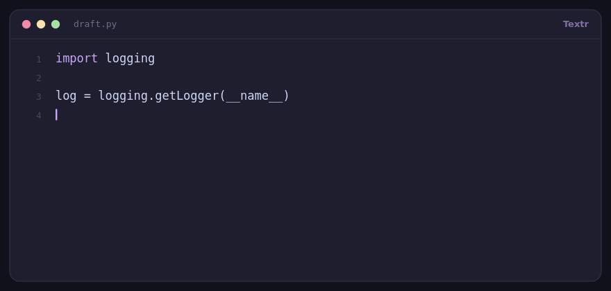

A text expander for Linux, on X11 or Wayland
The same snippet library on either session type. Textr picks the right input and typing backend for your desktop, and tells you exactly what's missing when something doesn't fire.
The Linux binary is a single executable — chmod +x textr && ./textr. The same purchase covers macOS and Windows; running from source below is free.

First: which session are you on?
echo "$XDG_SESSION_TYPE" # x11 or wayland
echo "$WAYLAND_DISPLAY" # set on Wayland, empty on X11X11 vs Wayland
| X11 | Wayland | |
|---|---|---|
| Key capture | pynput | evdev, straight from /dev/input |
| Inserting text | Clipboard paste | Typed via ydotool |
| Permissions | None | input group membership |
| Extra packages | Optional xdotool for quick insert | python-evdev, ydotool |
| Quick insert hotkey | Ctrl+Alt+Space | Manager button / tray |
| Pause / show window | Ctrl+Shift+P, Ctrl+Shift+Space | Same, via evdev |
Install
Prebuilt binary (no Python needed)
wget https://github.com/Landaluce/Textr/releases/latest/download/textr
chmod +x textr
./textrFrom source
git clone https://github.com/Landaluce/Textr.git
cd Textr
python3 -m pip install -r requirements.txt
bash run.sh # or: python3 main.py
# install the `textr` and `textr-diag` commands:
python3 -m pip install .The tools each desktop needs
| Distro | Base packages | Wayland extras |
|---|---|---|
| Fedora | sudo dnf install python3-pip |
sudo dnf install ydotoolsudo dnf install xdotool |
| Ubuntu / Debian | sudo apt install python3-pip python3-venv |
sudo apt install ydotoolsudo apt install xdotool |
| Arch | sudo pacman -S python-pip |
sudo pacman -S ydotoolsudo pacman -S xdotool |
Package names move between releases — if ydotool isn't in your repositories yet, build it from github.com/ReimuNotMoe/ydotool. Only Wayland sessions need it; xdotool is optional and only improves window restore for quick insert on X11.
Wayland: one-time permissions
sudo usermod -aG input "$USER" # then log out and back in
sudo systemctl enable --now ydotool.serviceWhere your data lives
Everything is plain JSON under $XDG_CONFIG_HOME/textr/ (default ~/.config/textr/):
snippets.json— the snippet libraryconfig.json— profile, layout, paste shortcut, date formatsusage_log.json— per-day expansion counts, newest 90 days
Back them up, put them in a git repo, or copy them to another machine — there's no server involved.
When triggers don't fire
textr-diag # session, devices, permissions, ydotool
textr-diag --listen 5 # see keycode -> character under your layout
textr-diag --test-type # check typing output end to endWhat Textr doesn't do
- No Flatpak or Snap build. Sandboxing blocks raw keyboard access, which is the whole mechanism — use the binary or a source install.
- Five keyboard layouts (us, uk, de, fr, es) for Wayland keycode mapping; others need a table entry.
- The quick-insert hotkey is X11-only; on Wayland you open the picker from the manager.
- No auto-update — download the next release, or
git pullif you run from source.